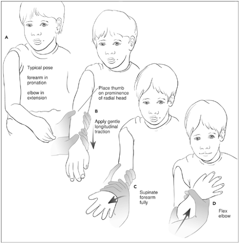
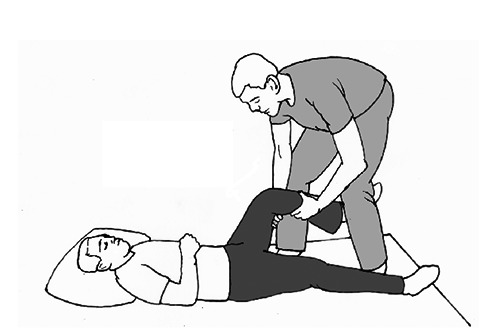
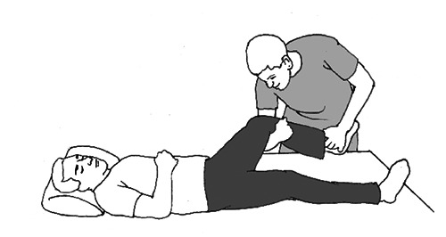
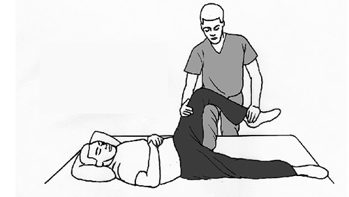
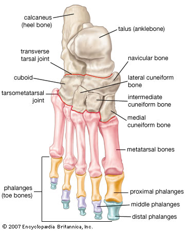
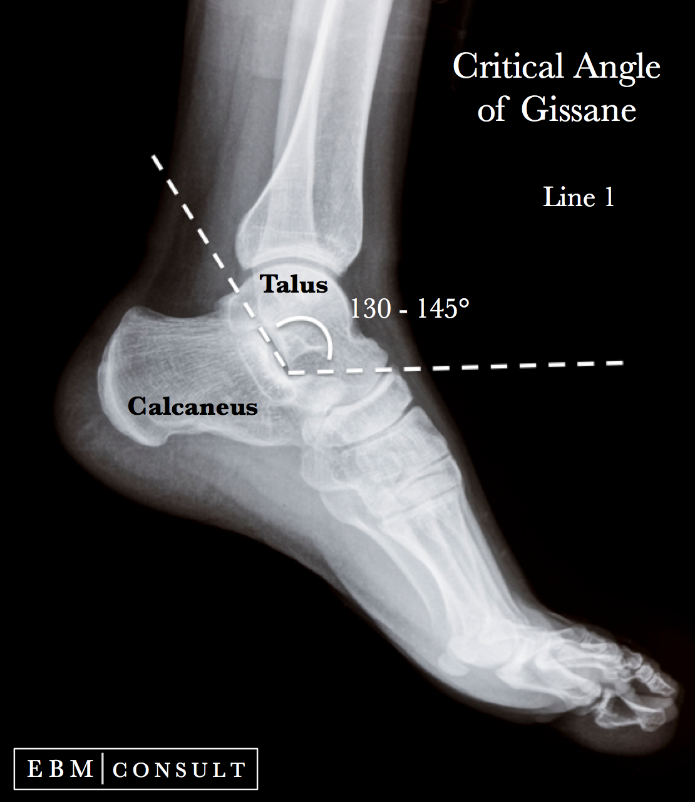
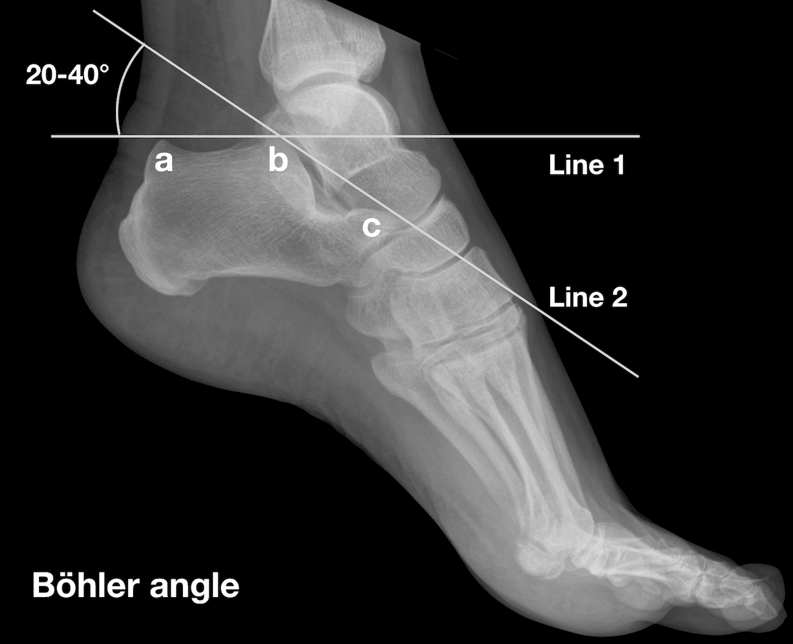

MSK 肌肉筋骨健康¶
[[TOC]]
General¶
Functions of Bones¶
- Supports the weight of the body and head
- Protect structures
- Attachment for tendons and muscles to enable locomotion
- Calcium and phosphorus homeostasis
- Hematopoesis
Investigations¶
Bone scans identify areas of high bone turnover and are used to evaluate metastatic disease, suspected fractures, and osteomyelitis. They are also sometimes used to evaluate chronic low back pain. They do not demonstrate soft tissue and neural structures; therefore, they are inferior to MRIs in evaluating lumbar stenosis.
Cases¶
80 year old fall with outstretched hand¶
- Most common distal radial fracture: Colle's fracture¶

Fractures and Dislocations¶
Treatment options
- M + R
- Backslab
- Operate
- ORIF - need both fragments to be large enough for putting on a plate
- External fixation - less likely for tendon to pull the fragment into a weird location
- Leave Alone
For all fractures, worry neurovascular complication and know which nerve and vessel might be implicated. Also worry about
Direction of fracture is define as proximal to distal
Question
- For both ORIF and external fixation, we need to drill into both the proximal and distal fragments; why would we prefer to for external fixation;
Upper Limb Injuries¶
The locations of colles, smith, and barton's fractures.
Colles' Fracture¶
A Colles' fracture is a type of fracture of the distal forearm in which the broken end of the radius is bent backwards. Symptoms may include pain, swelling, deformity, and bruising. Complications may include damage to the median nerve. It typically occurs as a result of a fall on an outstretched hand.

5 criteria for Colles' fracture
- Transverse fracture of radius
- Within 5 cm of
- Dorsal displacement and tilt
- Lateral displacement and tilt
- Impaction
Classifications of Colles' Fracture for Severity (Frykman Classification)
| Radius Fracture | Ulna Fracture Absent | Ulna Fracture Present |
|---|---|---|
| Extra articular | I | II |
| Intra-articular involving radiocarpal joint | III | IV |
| Intra articular involving distal radio-ulnar joint | V | VI |
| Intra articular involving both radiocarpal & distal radioulnar joints | VII | VIII |
Differential
- Smith's fracture (palmer displacement instead of colles')
- Ulnar fracture
Management
-
Analgesia
-
immobilise
- NSAIDs
- Aspirin, ibuprofen, naproxen - oral drugs consider NIL for potential surgery
- Entrox - inhalation analgesia
- Bier's block:
- Intravenous regional anaesthesia (IVRA) is a technique involving administration of a local anaesthetic into a region where venous return is mechanically impeded.
- Intravenous Regional Anaesthesia (IVRA) is better than haematoma block in forearm fracture reduction
-
Hematoma block
-
Continuous monitoring
-
ECG
- Oximetry
Smith's Fracture¶
Also known as reverse colles fracture.
Barton's Fracture¶
Fracture dislocation of the distal fragment. Note that the location matters.

Manage
- Use surgery, worry neurovascular complications
- Worry neurovascular complications
Monteggia Fracture-dislocation¶
Dislocation of the proximal radial head
Mid shaft ulnar fracture with dislocation of the proximal radial head

Differential:
- Galeazzi fracture - M on the mountain G on the ground
Management
- ORIF of the ulna diaphyseal fracture. The ulna fracture is approached and reduced first. The radial head dislocation then usually reduces indirectly and is stable. (More than 90% of radial head dislocations are stable after fixation of the ulna.)
- In children closed reduction is more common and successful; young bones heal much better
- Sedate the child, using ketamine, best child for children - conscious sedation
- IUI image intensifier
Galeazzi fracture¶
Distal radial ulnar dislocation
The Galeazzi fracture is a fracture of the distal third of the radius with dislocation of the distal radioulnar joint.
Nursemaid Elbow¶
Radial head subluxation.
Management
- Nursemaid elbow reduction: be gentle, no need drug

Elbow Dislocation¶
Worry
- Ulnar nerve and more rarely medium nerve
- Brachial artery - and delayed compartment syndrome

Management
- Conscious sedation: inhale or IV
- M&R:
- Need 2 people to produce contraction and counter traction
- Assistant will hold distal part to distract it; physician hold elbow, thumb on olecranon process and then push forward; do 2 planes
Anterior Dislocation of the Shoulder¶
Note the squaring of the shoulder on the left. History is that patient is lifting weight when the shoulder popped.
- Vascular problem is uncommon
- Check for sensation; check brachial plexus injury with medial and ulnar sensation
- Watch out for the


Management
- Get X-ray - shoulder AP and Y image of the scapular
- Conscious sedation
- Patient preparation
- Procedure: penthrox inhaler
- Post procedure
- M&R
- Need patient to be relaxed
Avulsion Fracture of Greater Tuberosity¶

- Read y image of the scapular
- Avulsion fracture of greater tuberosity; infraspinatous.
Management
- Conscious sedation with M&R
- It will cuz the SIT rotator cuff muscles insert onto the greater trochanter can’t ignore the fragment
Acromioclavicular Joint Injury¶

Rockwood Classification
| Type | AC Ligament | CC Ligament | Exam | Radiograph | Reducibility | Treatment |
|---|---|---|---|---|---|---|
| I | Sprain | Normal | AC tenderness, no instability | Normal | Sling | |
| II | Torn | Sprain | AC horizontal instability | AC joint disrupted increased CC distance <25% of contralateral | reducible | Sling |
| III | Torn | Torn | Divided into A or B depending on there is only vertical or both vertical AND horizontal instability | Increased CC distance 25 - 100% of contralateral | reducible | Controversial |
| IV | Torn | Torn | Skin tenting, posterior fullness | Lateral clavicle displaced | Not reducible | Surgery |
| V | Torn | Torn | Severe shoulder droop, does not improve with shrug | Increased CC distance >100% of contralateral | Not reducible | surgery |
| VI | Torn | Torn | Rare; associated injuries; paresthesias | Inferior dislocation of lateral clavicle, lying either in subacromial or subcoracoid position | Not reducible | Surgery |
Management
-
Options
-
Collar and calf - elbow in flex positions, gravity will pull on the elbow
- Triangle sling - elbow in horizontal position
Never put AC joint dislocation in collar and calf! Only triangle arm sling
- Surgery if sports person
Axial Injury¶
C-spine injury*¶
- Brachial Plexus Injury - claw hand
- Engorged penis


Management
- C-spine collar
- Immobilise
- Stabilise and call neurosurgery
- Relief cord compression
- Give steroids
Spinal Fracture and Injury¶
Spinal neoplastic fracture stability score
Tokuhashi score - Scoring system for prediction of metastatic spine tumor prognosis
Isolated rib fracture¶
Isolated rib fracture is rib fracture without evidence of chest wall deformity or internal organ injury (eg, pneumothorax). Even in the absence of concomitant injuries, rib fractures can cause sufficient pain to result in shallow breathing (ie, small tidal volumes) and atelectasis. Without adequate pain control, splinting and atelectasis increase the risk of pneumonia, a frequent complication of rib fracture.
After significant associated injuries have been ruled out or treated, the mainstay of rib fracture management is pain control to ensure appropriate ventilation and adequate cough.
- Oral nonsteroidal anti-inflammatory drugs (eg, ibuprofen, ketorolac) and opioids are commonly used. Opioids can cause central respiratory depression, but this disadvantage is typically outweighed by the benefits of adequate pain control.
- For patients who require hospitalization (eg, for more extensive rib fractures), intravenous analgesics and regional anesthetic techniques (eg, epidural infusion, intercostal nerve blocks) may be added.
- In addition to pain control, patients should be taught the importance of pulmonary toilet and the use of incentive spirometry.
- Rib fractures typically heal without surgery, especially nondisplaced fractures, like this patient has. Surgical fixation is typically indicated only for severe cases (eg, flail chest with failure to wean from the ventilator, significant chest wall deformity).
- Although rib fractures can be complicated by pneumonia, prophylactic antibiotics are not routinely indicated
Pelvic Fracture¶
A pelvic fracture is a break of the bony structure of the pelvis. This includes any break of the sacrum, hip bones (ischium, pubis, ilium), or tailbone. Symptoms include pain, particularly with movement. Complications may include internal bleeding, injury to the bladder, urethra, or vaginal trauma.

Management
- Pelvic Binder to prevent bleeding
- Interventional radiologist for embolization
- X-fix may be introduced
Question
- If we don't put in catheter and there is an injury, couldn't we be worried about urinary retention? If there is suspected injury, put in a suprapubic catheter.
Lower Limb Injuries¶
Posterior Hip Dislocation¶

Management
-
Pain control
-
Look for other injuries
-
M&R: the principles of reduction are flexion, internal rotation, and adduction of the hip.
-
Allis Maneuver

-
Bigelow maneuver

-
Lefkowitz maneuver

Anterior Dislocation of the Hip¶

Management
- Similar to posterior dislocation
Mid Shaft Femoral Fracture¶

- Femoral block for analgesics
- Traction splint
- Longer term solution is to anterior medullary nail
Suprapatellar Quadricep Tendon Rupture¶

Management
Patella Dislocation¶


- Lateral displacement of the patella
Management
-
Conscious sedation: penthrox or IV
-
M&R in this patient
- Use thumb to push it back
- Manipulate the knee, slowly extend and pop the patellar in
- Post reduction care
- Normal care of patellar dislocations when a loose fragment has not been created is the immobilization of the knee for a short period of time (seven to 10 days). During this time, the swelling is reduced, and the acute discomfort of the dislocation decreases. The healing process requires slow mobilization of the knee and the patellofemoral joint, and full recovery can usually be expected within a three to six week period. Backslab can be used
- TCU ortho 3 - 6 weeks
Femoral-tibial dislocation*¶
Femoral-tibial dislocation is an infrequent and potentially limb threatening injury. The most common cause of injury is high energy trauma (i.e. motor vehicle accident, falls, auto-pedestrian accidents, industrial accidents, sports-related injuries) and often involves damage to multiple ligaments supporting the knee.
| Different types | Remark |
|---|---|
| Posterior | due to an anterior-to-posterior blow to the proximal tibia |
| Anterior | due to hyperextension of the knee. Research has shown that approximately 30 degrees of hyperextension is needed to cause dislocation |
| Medial | due to a valgus force applied to the proximal tibia. |
| Lateral | due to a varus force applied to the proximal tibia. |
| Rotatory | generally due to an indirect rotatory force where the body rotates in the opposite direction of a planted food. Subdivisions of rotatory dislocation include: anteromedial, anterolateral, posteromedial, posterolateral. |
Anterior and posterior dislocations comprise more than half of all knee dislocations and have a high incidence of concomitant popliteal artery injury.

Distal on the left; pull like crazy! Thigh muscles will be in spasm.
Management
- Should M&R on discovery;
- even without analgesia if on the road side
- If at the ED, put in IV lines, give midazolam or morphine analgesic, M&R immediately with progressive traction with get popliteal artery back in line
- Then put into a splint or reduction
- Call orthodontist / vascular
- They will do angiogram to check for tear in popliteal artery
Archilles Tendon Rupture¶

Management
- Plantarflex the foot; like introducing a stab
- Operation is definitive treatment
Ankle Dislocation* with Pott's Fracture¶


- Complication: Skin necrosis indicate limb threatening
Management
- M&R to save the limb at the side of the road
- Pull and get the dislocated part back onto the proximal end
- Check for pulses and sensation
- Backslab
Lisfranc Fracture¶
Lisfranc injury, also known as Lisfranc fracture, is an injury of the foot in which one or more of the metatarsal bones are displaced from the tarsus. The injury is named after Jacques Lisfranc de St.


Management
- Stabilize
- Give analgesia
- Open reduction with fixation to restore keystone joint
- Worry long term complication: metatarsalgia
Jones Fracture¶
A Jones fracture is a break between the base and middle part of the fifth metatarsal of the foot. It results in pain near the midportion of the foot on the outside. There may also be bruising and difficulty walking.
Foreign Body Foot¶

- Look out for the small puncture
- Refer to ortho, because it is looking for needle in haystack
- Need to open, clean, look for fragments: NOT a simple operation
- Treat puncture wound carefully, may develop into abscess
Management
- Check immunisation status
- Check for gas in soft tissue
- FB removal
- Give MC
Calceneal Fracture¶

-
May clue is flattening of the calcaneal / collapsed tent
-
Gissane angle

- Bohler angle

Trauma¶
Common injuries associated with decelerating vertical fall¶
(Mobile part in cavity can jiggle around)
- Calceneal fracture
- Vertebral fracture (esp junctions between fixed and flexible part, T12 L1 L2 / C7 T1)
-
Rare - acetabulum fracture
-
Soft tissue
- Head injury - intracranial bleed
- Aortic root tear
- Second part of duodenum where it goes retroperitoneal
- Mesenteric part
Bone Disorders¶
Osteoporosis 骨质疏松症¶
Muscle Problems¶
Polymyositis¶
Immune-mediated muscle inflammation suggests polymyositis. This condition can present with proximal muscle weakness. However, reflexes are typically preserved and muscle enzymes (eg, creatine kinase) are usually elevated.
Amyotrophic Lateral Sclerosis¶
Upper and lower motor neuron degeneration is suggestive of amyotrophic lateral sclerosis. It generally presents with bulbar symptoms followed by limb weakness associated with upper (eg, hyperreflexia, spasticity) and lower (eg, muscle atrophy, fasciculations) motor neuron signs.
Myonecrosis or Rhabdomyolysis¶
Spine Problems¶
Cervical spondylosis¶
(ie, degenerative changes of the cervical spine), which is common in elderly adults, may cause disc herniation or spinal cord compression resulting in radiculopathy and/or myelopathy.
Wrist Problem¶
Carpel Tunnel Exam¶
-
Physical
-
Tinel's sign:
-
Tap over the median nerve at the wrist to reproduce symptoms.
-
36% sensitive and 75% specific for carpal tunnel syndrome.
-
-
Phalen's test:
-
Flex wrist by having patient place dorsal surfaces of hands together in front of her for 30 to 60 seconds to reproduce symptoms.
-
sensitive at 57%, but less specific at 58% to 75%.
-
-
Carpal Tunnel Compression (Durkan's sign):
-
Compress the carpal tunnel for 30 seconds to reproduce symptoms.
-
sensitivity of 64% and specificity of 83%
-
-
Arm Problems¶
Radial nerve compression¶
Radial nerve compression from trauma can occasionally be seen in shoulder dislocations but most commonly occurs in the forearm. It often results in hand weakness and decreased handgrip, which are not seen in this patient.
Shoulder Dislocation¶
Anterior shoulder dislocation¶
Anterior dislocation is the most common form of shoulder dislocation and is usually caused by a direct blow or fall on an outstretched arm. In anterior dislocations, the patient holds the arm slightly abducted and externally rotated.
Posterior shoulder dislocation¶
Violent muscle contractions (eg, seizure, electrocution injury) can cause posterior shoulder dislocation. On examination, the arm is held in adduction and internal rotation, with flattening of the anterior aspect of the shoulder. X-rays show loss of the normal relation between the humeral head and glenoid and internal rotation of the humeral head. Most posterior dislocations are managed with closed reduction.
In a posterior dislocation, the arm is typically held in adduction and internal rotation, with impaired external rotation, visible flattening of the anterior aspect of the shoulder, and prominence of the coracoid process. Radiographic findings may include: - Loss of the normal overlap between the humeral head and the glenoid; a normal shoulder x-ray with normal overlap is given for comparison - Internal rotation of the humeral head, which causes a circular appearance (light bulb sign) on anterior views - Widened joint space >6 mm (rim sign) or 2 parallel cortical bone lines on the medial aspect of the humeral head (trough line sign)
Potential complications include fractures of the proximal humerus, labral injuries, and tears to the rotator cuff system. Most posterior dislocations are managed with closed reduction.
Back Problems¶
Cauda equina syndrome - Danger¶
-
Should always be considered due to the seriousness of the consequences.
-
Occurs when a large mass effect (such as an acute disc herniation or a tumor) compresses the cauda equina, causing pain radiating down the leg and can be accompanied by weakness and numbness of the leg.
-
True emergency. Decompression should be performed within 72 hours to avoid permanent neurologic deficits.
-
Low on the differential if the patient denies problem with bowel or bladder control.
Vertebral Fracture - Danger¶
Risk
-
Anyone with significant trauma, mild trauma if over 50, and no trauma if over 70
-
History of osteoporosis
-
prolonged use of corticosteroids
-
previous vertebral fracture
Physical exam
- Bony point-tenderness in a patient with low back pain should prompt an x-ray to rule out fracture
Malignancy induced bone pain - Danger¶
-
Important consideration. A very serious, although uncommon, cause of back pain.
-
History of cancer or unexplained weight loss (>10 kg over 6 months); night pain
-
Age over 50 or under 17
-
Pain is localized to the affected bones, it is a dull, throbbing pain that progresses slowly, and it increases with recumbency or cough. It does not improve with therapy, persists for more than 4 - 6 weeks, and can be present at night and at rest.
Lumbar Strain¶
- The most common cause of acute low back pain in adults
- Typically has an acute or sub-acute onset after an injury or precipitating activity (e.g., moving furniture)
- Pain is typically worse in the paraspinal muscles lateral to the spine and may be bilateral or unilateral
- Pain may radiate down one or another leg
- Pain is worse after periods of immobility and with particular movements (depending on where the strain is)
Spondylolisthesis¶
- Anterior displacement of a vertebra or the vertebral column in relation to the vertebrae below.
- Can occur at any age.
- Causes aching back and posterior thigh discomfort that increases with activity or bending
Spondylosis¶
Spondylosis is a type of degenerative arthritis spurred by wear and tear to the spine. It happens when discs and joints degenerate, when bone spurs grow on the vertebrae, or both. These changes can impair the spine's movement and affect the nerves and other functions.
- Increasingly common with advancing age
- If an osteophyte impinges a nerve root, can cause radicular symptoms in that nerve's distribution
- Has a more insidious onset
Ankylosing Spondylitis¶
-
Chronic, painful, inflammatory arthritis primarily affecting the spine and sacroiliac joints, causing eventual fusion of the spine.
-
Often seen in patients 15-40 years old, associated with morning stiffness and achiness over the sacroiliac joint and lumbar spine.
Spinal stenosis¶
-
Caused by central deformity compressing the cord, such as by central disc herniation, spondylolisthesis, osteophyte, or mass
-
Hallmark symptom is pain radiating to the legs (bilateral more common than unilateral) that is brought on by walking or standing (sometimes called pseudoclaudication)
-
Sitting relieves the symptoms
Herniation of Intervertebral Disk¶
History
-
May have acute or sub-acute presentation that is precipitated by a sudden injury
-
Location of pain depends on the level of the herniation and often radiates down the leg / foot
-
Pain is often aggreviated when the hips are flexed, as in sitting, and during coughing and sneezing
-
May be associated with paresthesias and muscle weakness, such as foot drop
Physcial
-
Positive passive and crossed straight leg raise test
-
Paresthesia, and weakness on one leg
Prognosis
- Typically is self-limited and resolves in 2 - 4 weeks
Management: NSAID + bed-rest
Hip Problem¶
Hip Fractures¶
3 categories
- Femoral neck: 45 - 53 %
- Intertrochanteric: 32 - 40 %
- Subtrochanteric: 5 -10 %
Total Hip Replacement¶
Choice of Prosthetics¶
Cemented joint arthroplasty
- Mostly for young patient
- Bone cement or polymethylmethacrylate (PMMA) is used to fix the prosthesis in place in the joint
Ingrowth (cementless) arthroplasty
- Procedure is based on a fracture-
Hip Precaution after Replacement¶
DVT post hip replacement¶
Prophylaxis is very important
- SC low molecular weight heparin 40 mg once daily ; usual duration 3 weeks or up to time of discharge
- Warfarin target INR: 2 -3
- Intermittent pneumatic stockings: if anticoagulation is contraindicated
Mechanical Knee Problems¶
Knee Sprain¶
-
Presentation
-
Very common condition
-
Typically associated with trauma (which can be so minor that a person does not recall it)
-
Can be associated with a small effusion, and with pain that worsens with weight-bearing and activity.
-
Iliotibial Band Tendonitis¶
-
Presentation
-
Lateral knee pain
-
No associated trauma but there could be history of overuse (repetitive knee flexion)
-
Pain aggravated with activity
-
Tibial Apophysitis (Osgood-Schlatter)¶
-
Presentation
- Most common in Children
Patellofemoral Pain Syndrome (Chrondromalacia Patellae)¶
-
Presentation
-
Anterior knee Pain
-
Without acute trauma but may have history of overuse
-
Typically presents in women as \"theater sign\"- mild to moderate anterior knee pain, worse after prolonged sitting
-
Patella Subluxation¶
-
Presentation
- Most commonly in children
Anterior Cruciate Ligament Sprain¶
-
Noncontact deceleration forces resulting in general knee pain
-
Swelling within two hours of \"pop\"
Medial Collateral Ligament Sprain¶
-
Presentation
- Immediate onset of medial joint pain/swelling after trauma such as misstep or collision
Lateral Collateral Ligament Sprain¶
-
Presentation
-
Immediate onset of lateral joint line pain
-
Associated with varus stress
-
Less common than medial collateral ligament sprain
-
-
Physical
Meniscal Tear¶
-
Presentation
-
sudden twisting injury
-
Can occur with chronic degenerative process
-
-
Physical
-
Mild effusion
-
Possible atrophy of the vastus medialis obliquus portion of the quadriceps
-
Catching/locking of the knee
-
Can have positive McMurray test
-
Popiteal Cyst¶
Most common synnovial cyst of the knee
-
Presentation
- Insidious onset of mild to moderate pain in the popliteal area of the knee
Foot Problems¶
Diabetic Foot Ulcers¶
Patients with long-standing diabetes mellitus who have poor glycemic control are at high risk for diabetic foot ulcers. Risk is greatest in those with concomitant diabetic neuropathy, which reduces pain sensation and identification of ulcer, and peripheral vascular disease, which reduces immune recruitment and ulcer healing. Because diabetic foot ulcers are usually colonized by a wide range of organisms (eg, aerobic gram-positive cocci, enterococci, Pseudomonas, anaerobes), they are often complicated by adjacent soft tissue infection and/or underlying osteomyelitis.
Although these infections often occur simultaneously, osteomyelitis can arise without evidence of soft tissue infection due to neuropathy (diminished pain) and poor peripheral blood flow (diminished erythema, warmth, and purulence). Therefore, foot imaging (eg, x-ray, MRI) is generally recommended for all diabetic foot ulcers that are: - deep (eg, exposed bone, positive probe-to-bone testing). - long-standing (eg, present >7-14 days). - large (eg, ≥2 cm). - associated with elevated erythrocyte sedimentation rate/C-reactive protein. - associated with adjacent soft tissue infection.
Management - Although hyperbaric oxygen therapy is sometimes used in patients with poorly healing diabetic foot ulcers, evaluation for underlying osteomyelitis must occur prior to treatment because antibiotics and debridement might be required. - Correct deficiency of vitamin C and zinc which would impair wound healing - Wound dressings are an important component of the treatment of diabetic ulcers - Topical antibiotics should not be administered until osteomyelitis is ruled out. - IF there is osteomyelitis, give systemic, not topical, antibiotics.
Summary: A diabetic foot ulcer is a common complication of long-standing diabetes mellitus and is particularly common in patients with neuropathy and peripheral vascular disease. Deep, long-standing, or large ulcers require foot imaging (eg, x-ray, MRI) to assess for underlying osteomyelitis, even when no signs or symptoms of soft tissue infection are present. Ulcers associated with elevated erythrocyte sedimentation rate or C-reactive protein also require imaging.